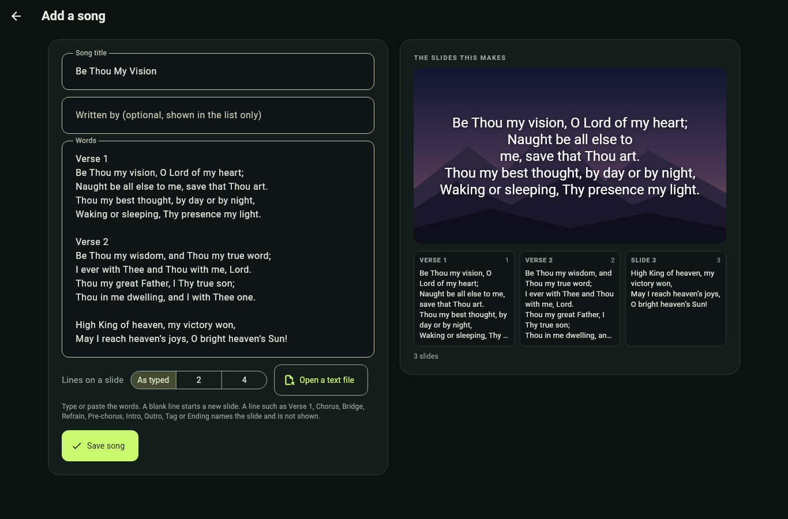
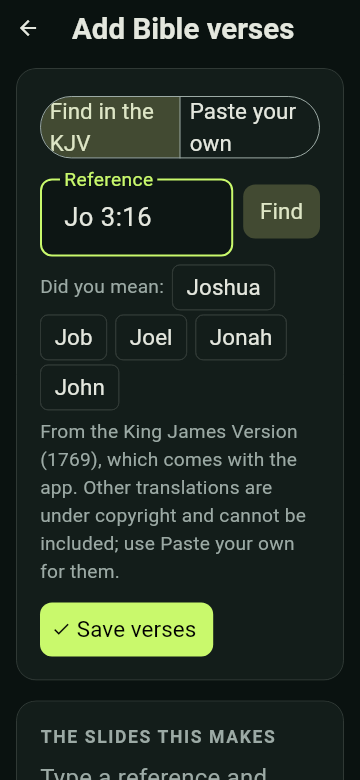
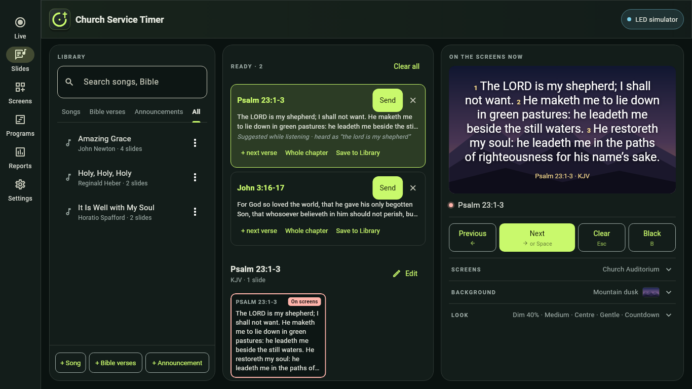
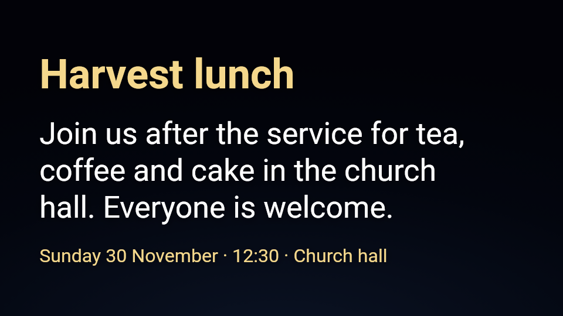
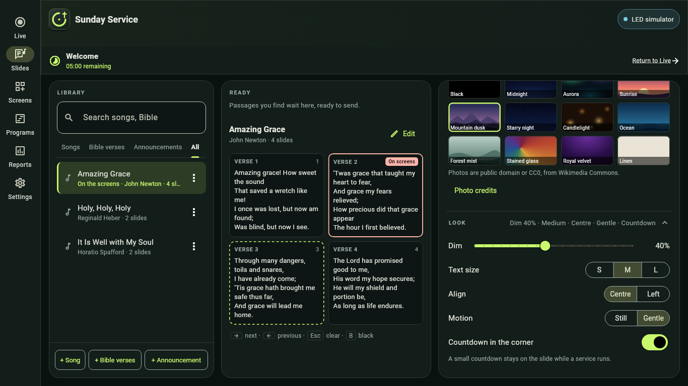
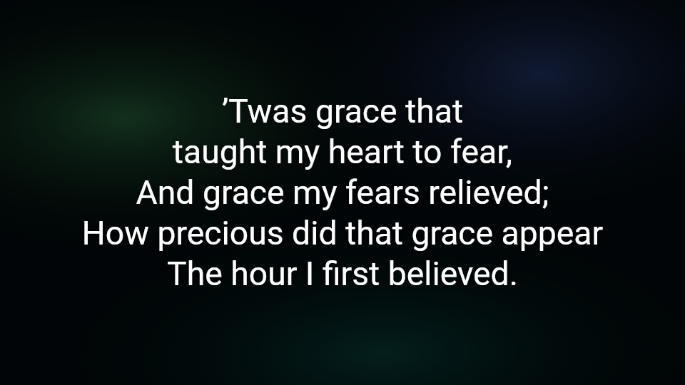

Slides puts song words, Bible verses and announcements on the screens. You keep them in a Library. In the service, you click or tap one slide at a time. Slides needs app 0.38.0 or later on the phone or PC that runs the service. This lesson describes 0.39.0, which made the Slides page tidier and added Bible search.
What Slides is for, and where it is
Use Slides when the people in the room should read something: a song, a Bible reading or a notice. The words go to the screens in every group that is set to show Slides (see Choose what every screen shows). They never go to the LED sign.
- The Slides tab comes second, right after Live. On a phone it is in the bar along the bottom. On a tablet or a PC it is in the side rail, or across the top of the window. The order is Live, Slides, Screens, Programs, Reports, Settings; a phone has the same without Screens, which is a button on Live.
- The Slides button on Live opens the same page. On a phone, a tablet and in Classic it sits next to Change display, under the display preview. In the other PC layouts (Mission control, Three panes, The dial and Keys) it is an icon in the top bar, lit while a slide is showing.
- No service needed. You can show slides before the service, with the app standing by.


On a PC the page has three columns. On the left is the Library. In the middle are the Ready tray and the slides of the song you chose. On the right is On the screens now, with the buttons and three rows: Screens, Background and Look.

On a phone it is one column: a search field, a small preview, the song, its slides, and a bar along the bottom with Previous, Next, Clear and Black. The Screens, Background and Look rows are under the preview.

The Library
The Library keeps every song, set of Bible verses and announcement you save. It is the same for every service. The one you used last is at the top. The Library holds up to 300 items.
Tabs. Along the top of the list are Songs, Bible verses, Announcements and All. All is chosen to begin with, so nothing you have is hidden. On a phone, or with large text, the tabs scroll sideways rather than cut a name. Each tab says what to do when it is empty, and the tab you chose is remembered on this device.
- The search box finds a title, or any words inside an item, and also searches the Bible; see below. Search looks through everything, whichever tab is open.
- The ⋮ beside each item has Edit and Delete…. Delete asks first. It cannot be undone.
- Along the bottom of the Library is one small row of buttons: + Song, + Bible verses and + Announcement.
Add a song
- Choose + Song.
- Type the Song title. Written by is optional and shows only in the list.
- Fill in Words. Type them, paste them, or choose Open a text file and pick a file of words.
- Look at The slides this makes. It shows each slide as you type.
- Choose Save song.


Two rules shape the slides.
| Rule | What it does |
|---|---|
| A blank line | Starts a new slide. |
| A line such as Verse 1, Chorus, Bridge, Refrain, Pre-chorus, Intro, Outro, Tag or Ending | Names the slide. The name is not shown on the screens. It shows in the app, on the small slide. |
A block with no such line is called Slide 3, Slide 4 and so on. A name line in the middle of a block starts a new slide.
Repeat marks show as written. Words pasted from a website or a chat often mark italics with underscores, such as _(x2)_. The slide now shows (x2), on the slide cards, the preview and every screen, even a screen running an older version. The same goes for *stars* and **double stars** round words. The words you saved are unchanged.
The slide cards line up. In the Slides page and in the song, Bible verses and announcement editors, the cards in a row are all the same height, whatever the length of each slide. The slide name and the On screens badge no longer crowd each other, and the slide number sits at the right edge of every card.
Lines on a slide has three choices. As typed keeps each block whole. 2 or 4 cuts each block into slides of that many lines. Use 2 or 4 for a small room or a big font.
Add Bible verses
- Choose + Bible verses. Find in the KJV is chosen to begin with.
- Type a Reference and choose Find. Examples:
John 3:16,John 3:16-18,Psalm 23,1 Cor 13:4-7. Common short names work, and the app is forgiving; see below. - Look at the slides it makes, then choose Save verses.
The King James Version comes with the app, so no internet is needed. Each slide has a few verses, as large as fit. The reference shows under them in gold, for example John 3:16-17 · KJV.

Type it the way you would say it. A misspelt book is put right (Jhon 3 16, Genisis 1:1, Isiah 53:5, Phillipians 4:13, Revelations 22:21, Psalms 23), and the line under the box says what was understood, such as "Showing John 3:16". Words work too: John chapter three verse sixteen, first corinthians chapter thirteen verses four to seven, psalm one hundred and nineteen, romans eight twenty-eight, John 3 16 to 18 and John 3:16 through 18. Also accepted are john3v9, John 3 vs 9, I Kings 3:9, 1st Corinthians 13:4, First John 4:8, a translation after the reference (John 3:16 KJV, (KJV); the verses shown are always the King James Version), long dashes in a range, and spare spaces or full stops. A name that already worked works as before; Is and Isa now mean Isaiah.
When a short name could be several books, nothing is guessed. Did you mean: shows each one as a button, and one tap finds it. Jo 3:1 could be Job, Joel, John, Jonah or Joshua.


If the chapter or verse does not exist, the app says how many there are. For example: "John 3 has 36 verses, so there is no verse 99."
Another translation, such as the NLT. These are under copyright, so they do not come with the app. Choose Paste your own. Type the Reference (for example Romans 8:28), the Translation if you like (NIV, NLT, ESV and so on) and the Verse text. Paste only text your church may show. A blank line starts a new slide, and long text is split by length. The reference and the translation show under the words.
Search the Bible, and the Ready tray
The box at the top of the Library searches your songs and the whole King James Bible as you type. Nothing is downloaded and no internet is needed.
- A reference:
John 3:16,john 3 16,1cor13 4-7,psalm 23,John 3:16-4:2. - Any words from a verse, in any order:
shadow valley deathfinds Psalm 23:4. Quote a phrase to find just that wording. Spelling slips and modern words still find the old wording:he who believesfinds "he that believeth", andyoufinds "thee" and "ye". - The start of a book shows the books (
jooffers Job, Joel, John, Jonah and Joshua). Type a book first to stay in it (rom faith), or a name such asthe Lord's Prayerorthe Beatitudes. - Matched words are marked in each result.


Ready is a short list on the Slides page for passages you have found.
| To do this | Do this |
|---|---|
| Put a passage in Ready | Press Enter, or tap a result. |
| Show it on the screens | Press Send in Ready. It goes out like a slide from the Library, with the same background and Dim, to the same screens, and Clear slide works as usual. |
| Show it at once | Press Ctrl+Enter, tap a result a second time, or use the play button on a result. |
| Take in more | + next verse or Whole chapter. |
| Keep it | Save to Library keeps it as Bible verses. |
Ready is kept while the app is open and starts empty after a restart.
Keys. / or Ctrl+F goes to the box from anywhere on the Slides page. Up and Down move between results, and Esc clears the box. Search the Bible is also in Commands (Ctrl+K). On a phone, the search field at the top of Slides opens a full-height list of results.
Add an announcement
Choose + Announcement. Fill in a Title and the Words. Date, time or place is optional. The title shows large in gold, the words under it, and the date line smaller at the bottom.


Show slides in a service
- Choose a song in the Library. Its slides appear.
- Click or tap a slide. It goes to the screens at once.
- Move on with the buttons or the keys.
Two marks tell you where you are:
| Mark | Meaning |
|---|---|
| A red ring, and On screens | This slide is on the screens now. |
| A dashed line | This slide is next. |
On the screens now has four buttons in one row, all the same size, with Next the widest. On a computer each shows its key, and the row stays in one row on a small phone with large text. On a phone they are along the bottom. The line under the preview stays on one line and says, for example, Amazing Grace · Verse 2 · 2 of 4.
| Button | Key on a PC | What it does |
|---|---|---|
| Previous | Left arrow, or Page Up | Goes back one slide. |
| Next | Right arrow, Space or Page Down | Goes to the next slide. |
| Clear slide (Clear on a phone) | Esc | Takes the slide off. Every screen goes back to what it showed before. |
| Black | B | Turns the screens black. Press it again to bring the slide back. |
The keys work on the Slides page only. On Live, Space and the arrow keys keep their Live meanings: Space pauses (after it asks), and the arrow moves to the next segment. A key never changes a slide on Live, and never touches the timer on the Slides page. No key works while you type in a box.
Clear slide is also on Live, next to the line "On the screens: Amazing Grace · Verse 4". In Commands (Ctrl+K), it appears whenever a slide is showing. Go to Slides is there too.
Screens: choose where slides go
Slides go to every screen in a group that is set to show Slides (or Slides and timer) on the Screens page. See Choose what every screen shows.
On the Slides page, the Screens row says which groups show slides, for example Church Auditorium · Stage. Open it for an Open Screens button, which takes you to the page to change them. It replaces the old Second screen, Web screens and Stage screens choices.
- If no group shows slides, the row says No screens are showing slides. Show slides in Church Auditorium fixes it in one tap, under the row and under what is on the screens.
- After the update, screens that were ticked under the old Send to are in a group set to Slides.
- Passages sent from Ready go to the same screens as slides from the Library.
What the LED sign shows. Nothing changes. The LED sign never shows slides.
Clear slide gives back what each screen showed before: the countdown, the clock, a cue or the end screen. A quick message to the stage still shows over a slide, so a speaker always sees it, on groups with Shows cues on. A cue over a slide is a band across the bottom (or the top), with the slide's words moved up to make room.
A slide covers the countdown layouts, including Up next only, and the red overtime screen, but only on the screens in groups set to show Slides. Slides do not stop the service. The timer keeps counting under them.
Backgrounds and the look
The look is on the right of the page, under the preview and the buttons. One look is used for every slide. It is split into three rows, Screens, Background and Look. Background and Look start closed: tap a row, or press Tab then Enter or Space, to open it. This phone or PC remembers which you left open (not in backups), and a screen reader is told whether each row is open.



| Choice | What it does |
|---|---|
| Background | The picker has Designs, Nature, People and Your picture as buttons along the top. Designs are twelve drawn looks (Black, Midnight, Aurora, Sunrise, Mountain dusk, Starry night, Candlelight, Ocean, Forest mist, Stained glass, Royal velvet and Linen). Nature and People are 23 photos that come with the app. Choose Photo credits to see who took them. Your picture is one photo from your own device. |
| Dim | Darkens the background so words are easy to read. It starts at 70% and goes up to 90%. Linen has dark words and is never dimmed. |
| Text | S, M or L. This is the largest size allowed. Words are as large as fit and never cut off. |
| Centre or Left | Where the words sit. |
| Motion | Still, or Gentle: a slow zoom, drift or shimmer, twinkling stars or rising embers. Gentle is never used when Reduced motion is on. |
| Countdown in the corner | A small countdown on the slide while a service runs. In overtime it turns into a red chip with the time over, for example +0:42. |
Three slides, three looks. The first is the Aurora design:




Your picture does not reach phones and tablets acting as stage screens. They show Midnight in its place, and the page says so under the backgrounds. Your picture does show on the second screen, full screen and web screens. It stays on this device. A photo from the app's own groups works on every screen.
How it fits the rest
- The screen stays awake while a slide is showing. With Keep screen awake on While a service is running, a slide or Black on a screen holds the device awake. When you clear it, it lets go.
- The page follows your Finish. The page is cards like Live and Settings, in the Finish you chose. The slides themselves never use a finish.
- Typing in the editors keeps working. In Add or Edit a song, Add Bible verses and Add an announcement, clearing a box and quickly typing the same words again could once break the preview beside the form, so that the boxes stopped taking your typing and Tab no longer moved. That is fixed, and so is the same fault when you press Next and Previous quickly.
- Ending a service keeps everything. The Library and the look stay as they were.
- Backups carry the Library and the look. Your picture is not in a backup. A backup that has songs in it needs 0.38.0 or later to open. A backup with none opens as before.
- An older screen keeps the countdown. A phone, tablet or web screen on an earlier version does not know slides. It keeps showing the countdown, and a paired screen on an older version shows the countdown for Slides and timer too.
- Lock controls greys out the slide buttons.
Test the slides on the real screens before the service. Look at the room, not only at the preview on your phone.